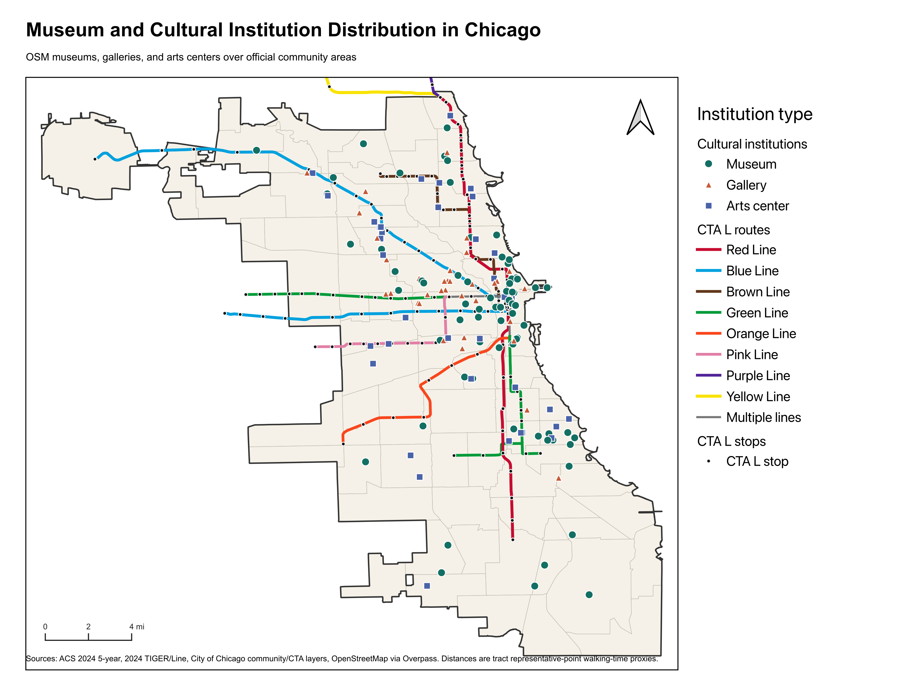
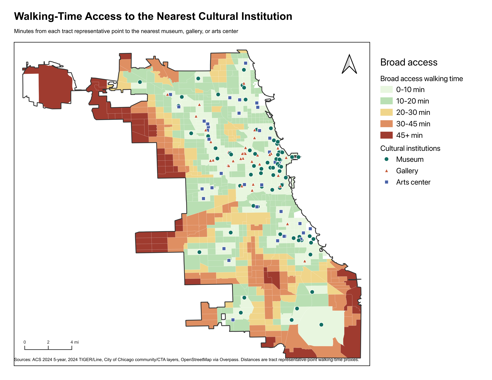
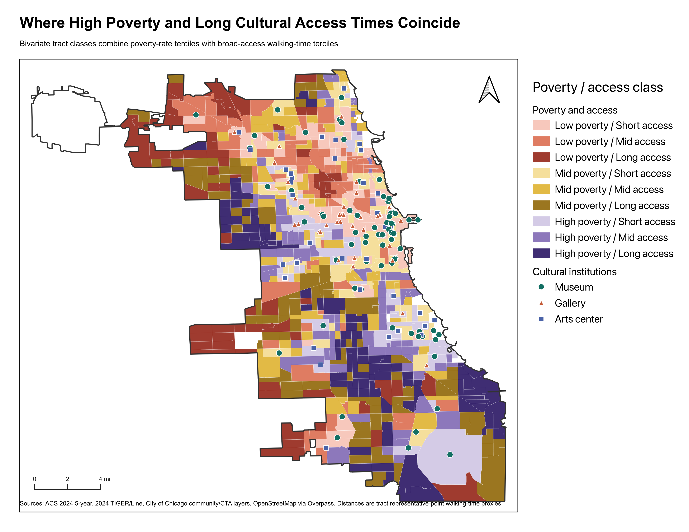
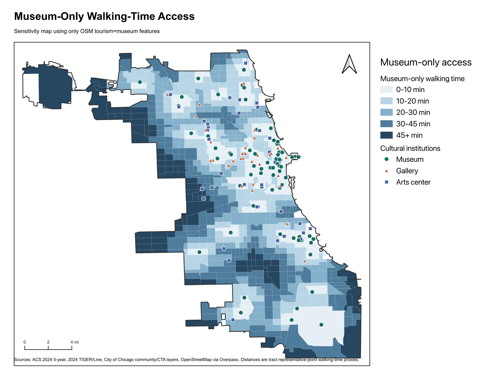
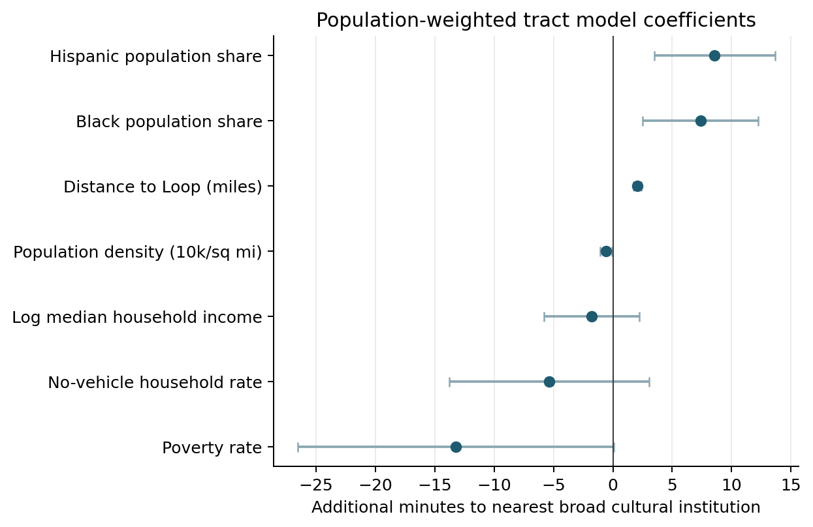
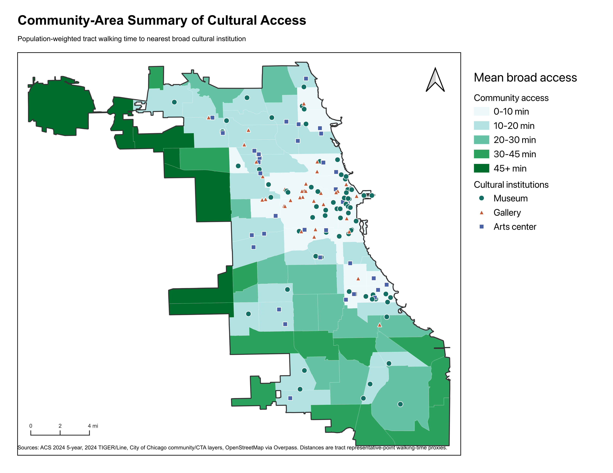
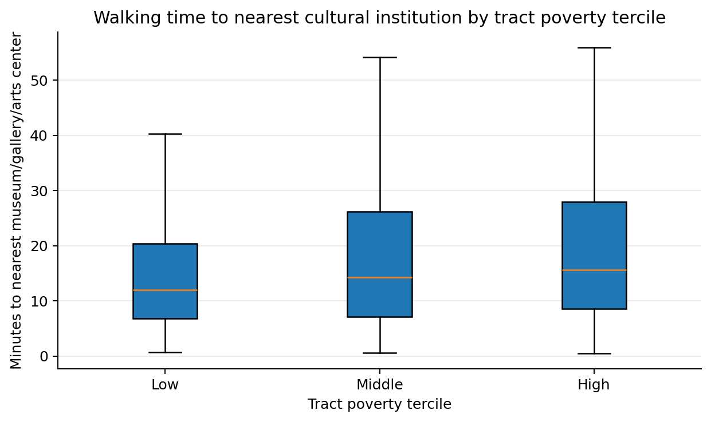

Mapping Cultural Access Gaps in Chicago
A GIS analysis of museums, galleries, and arts centers as neighborhood cultural infrastructure.
Felix Liu, Qi Liu, Zhiyuan Zhou
May 2026
Does Chicago's cultural geography produce equitable neighborhood access?
Our hypothesis: cultural institutions cluster around central, lakefront, and tourist-oriented areas, leaving longer access times in parts of the South, West, Northwest, and Southwest Sides.
- We test whether access gaps align with income, poverty, race and ethnicity, and transportation disadvantage.
- We compare two definitions: museum-only access and broader cultural-institution access.
- We treat access as a spatial equity screen, not as a full measure of cultural participation.
We connect cultural locations to residential geography.
Build inventory
OpenStreetMap museums, galleries, and arts centers inside Chicago; CTA L stops provide transit context.
Attach neighborhoods
2024 ACS tract attributes and official community areas make the access patterns demographically and locally legible.
Measure proximity
Tract representative-point distance to the nearest institution, converted to walking-time proxy at 3 mph.
Compare equity
QGIS maps, population-weighted group summaries, museum-only sensitivity test, and a descriptive tract model.
The measure is intentionally modest: it captures spatial opportunity, not total lived accessibility.
Cultural institutions are not evenly distributed.

Ratio = observed mean nearest-neighbor distance divided by the expected distance under a random point pattern.
- Clusters appear around the Loop, Near North Side, Near West Side, Lincoln Park, Hyde Park, and lakefront corridors.
- Large portions of the outer city have few nearby cultural points even before we consider museum-only access.
Broad cultural access is strongest near central and lakefront areas.

- Shorter access concentrates around the Loop, North Side, Hyde Park, and adjacent cultural corridors.
- Longer access appears in far Northwest, Southwest, West, and far South or Southeast communities.
Poverty matters, but it does not explain the geography by itself.

- Hue shows poverty tercile; shade shows access time, with darker shades meaning longer access.
- Some high-poverty tracts near central cultural clusters still have short proximity.
- Some lower-poverty outer neighborhoods have long access because they sit far from institution clusters.
The largest descriptive access gaps are racial and ethnic.
Average walking minutes to nearest broad institution
Majority Black and majority Hispanic tracts average roughly 8-10 more walking minutes than majority White tracts.
This is not just a poverty gradient or a car-ownership story.
- Majority White tracts: 80.9% of residents are within 1 mile of a broad cultural institution.
- Majority Hispanic tracts: 56.4% are within 1 mile.
- Majority Black tracts: 44.9% are within 1 mile.
Museum-only access makes the inequality sharper.

Galleries and arts centers soften the geography, but they do not erase the spatial equity gap.
After controls, centrality, density, and race/ethnicity still structure access.
Population-weighted tract model

Interpretation in plain English
- Distance from the Loop is the strongest predictor: about 2.1 more walking minutes per additional mile.
- Population density predicts shorter access.
- Black and Hispanic population shares remain positively associated with longer access times.
- Poverty and no-vehicle rates are not statistically distinguishable from zero in the full model.
Chicago's issue is not cultural abundance. It is uneven cultural proximity.
What the maps imply
Cultural equity should be measured as neighborhood infrastructure, not only as audience outreach or citywide institutional prestige.
Support for neighborhood-based cultural organizations matters most in lower-access areas on the outer South, West, Northwest, and Southwest Sides.
What future work should add
Replace straight-line proximity with GTFS-based transit time, then add hours, cost, disability access, language access, programming relevance, and safety.
Validate the OSM inventory against local cultural directories so smaller organizations are not missed.
Key figures for questions
Community-area access

Access distribution by poverty group
